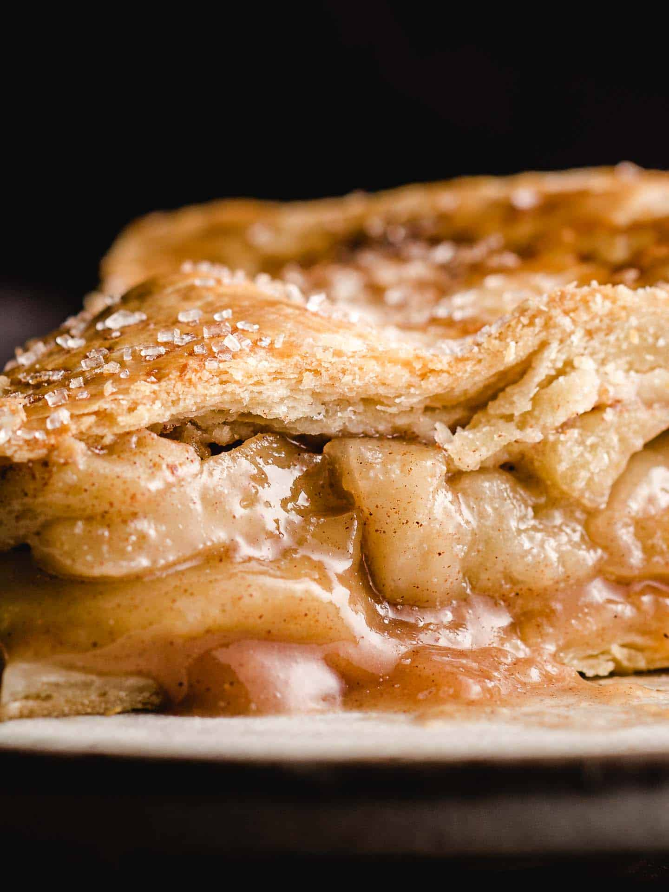

apple
Home

- 2 (9") pie crusts
- 7 large Granny Smith apples (peeled, cored and sliced into ½ inch slices)
- ½ cup granulated sugar
- ½ cup light brown sugar (loosely packed)
- 2 tablespoons all-purpose flour
- 1 teaspoon ground cinnamon
- ⅛ teaspoon ground nutmeg
- 1 tablespoon lemon juice (plus the zest of half of a lemon)
- 1 large egg (lightly beaten in a small bowl for egg wash)
- 2 tablespoons sanding sugar (optional)